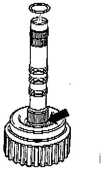

4TH Gear Clutch (K3) With Turbine Shaft

COMPONENT NOTES AND INFORMATION
1 Circlip
- Different thickness
- Mark after removing and install at same point
2 Thrust plate
- Install with stepped side facing circlip
3 Inner plate
- Quantity used. Application and ID
4 Outer plate
- Quantity used. Application and ID
5 Pressure plate
- Install with peened corrugated washer facing piston
6 Corrugated washer
- Peened to pressure plate (item 5)
7 Securing ring
- Removing and installing, refer to Fig. 1, below.
8 Piston cap
- Sealing lips are vulcanized to piston cap
- Moisten with ATF before installing
- Turn piston cap slightly when installing
- When removing and installing press down and install securing ring (item 7)
9 Spring
- Seat between piston and piston cap
10 Piston
- Sealing lips are vulcanized to piston
- Moisten with ATF before installing
- Turn piston slightly when installing
11 Clutch housing with turbine shaft
- Height varies according to number of inner and outer plates
12 -O- ring
- Always replace
- Installing, refer to Fig. 4, below.
13 Piston ring
- Check for correct location, refer to Fig. 2, below.
- Installing, refer to Fig. 3, below.
PROCEDURE

Fig. 1 Circlip (arrow), removing and installing
- Press down carefully on piston cap until circlip can be installed.

Fig. 2 Seating of piston rings, checking
- A piston ring is installed on the pump shaft inside the clutch housing (arrow).
- Ensure that ends of piston rings are hooked together.

Fig. 3 Piston rings, installing and hooking ends together
- Place piston ring in groove.
- Press sides of ring in and guide ends over one another.
NOTE: Do not twist piston ring out of groove on one side.

Fig. 4 O-ring, installing
- Insert O-ring in recess in turbine shaft (arrow).